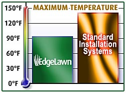
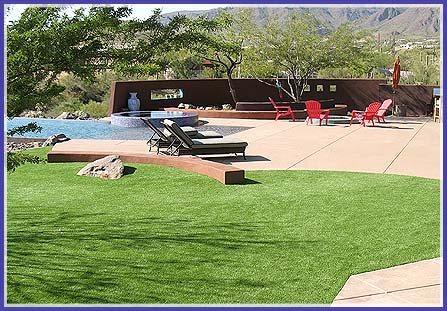

Lawns - Home Putting Solutions - Palm Beach
Your beautiful new
temperature-controlled
lawn is ready for you
at Putters Edge
Palm Beach

Artificial Turf Simulated Sunlight (heat) Test

Cooler Synthetic Lawns!
EdgeLawn artificial landscaping grass
is engineered to stay cooler in the Florida heat.
Our proprietary EdgeLawn® Synthetic Lawn System™ utilizes a unique installation method that will keep the surface temperature more comfortable during our intense South Florida HOT summer months.
That's because we have adopted a specialized process that is proven to keep surface temperaturess 20-50% cooler than typical installations... and that makes all the difference in the world!
That's because we have adopted a specialized process that is proven to keep surface temperaturess 20-50% cooler than typical installations... and that makes all the difference in the world!
No Watering. No Mower. No Fertilizer. No Pesticides.
Water resources are scarce in Florida, yet everyone enjoys the warmth and beauty of a thick, green lawn. How about a beautiful, perfectly manicured lawn year-round without the hassle and cost of constant maintenance? How about a "no mow lawn"... as in no mo' expensive lawnmower needed!
Putter's Edge offers one of the widest selections of premium lawn turfs. Unlike most companies, we have turf solutions from multiple mill sources. Many commercial entities have found that adding synthetic turf to their grounds - hotel, daycare, church, dog kennels, schools, etc - provides a functional and cost-effective landscaping solution.
Whether for home or business,
we have the synthetic grass lawn turf for you.
Here are a few reasons to choose
Home Putting Solutions - Palm Beach artificial turf
for your no-mow landscape:
- Wide variety of grass turf styles available from two of the most respected, experienced (over 50 years combined) artificial turf mills.
- Always looks and feels like a perfectly healthy natural grass lawn, without any of the maintenance. A true no mow grass lawn.
- Multiple"grasses" to meet your specific landscaping need: Centipede, Rye, Zoysia, Bermuda, and more. Beautiful, strong, yet realistic.
- Eliminate annual maintenance costs, effort required to water, mow, overseed, fertilize, apply insecticide, etc. Plus, No mow!
- Attractive, durable and safe for years of enjoyment - great for families with kids or pets. Just a good hosing usually cleans up!
- Won't attract insects, accidents wash right through, plus allergen-free.
- Effective water conservation while providing warmth, beauty & functionality of natural grass.
- We love transforming yards, treating every synthetic turf project as if it were being built in our own home or business.
Have more questions? Please Contact us or read our Lawn FAQs